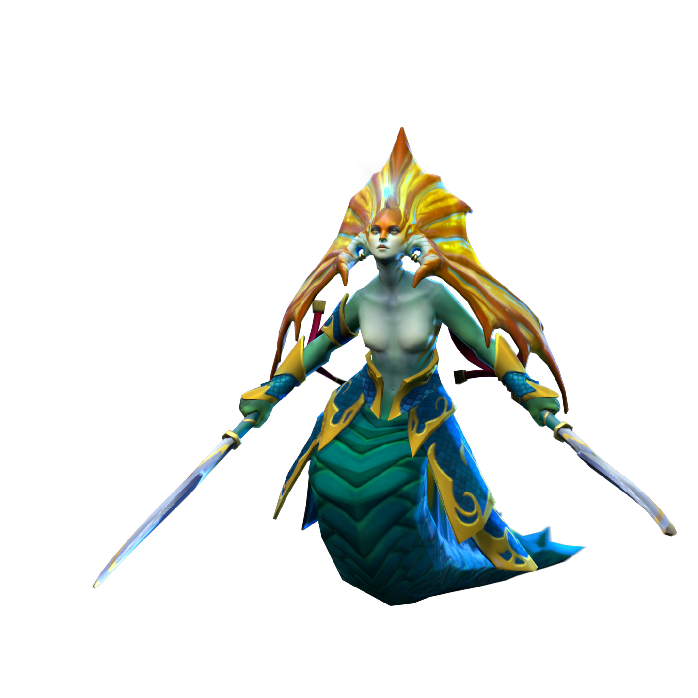

Это туториал о том, как правильно разгонять иллюзии на Naga Siren. Я хочу показать вам всё как надо и рассказать, как делать 1000 GPM.
Забинди сущностей на любую удобную клавишу, например на TAB.
Хочу выразить большую благодарность моему другу Денису, который со мной поугарал. Он любит Вич Блейд и Доту 2.